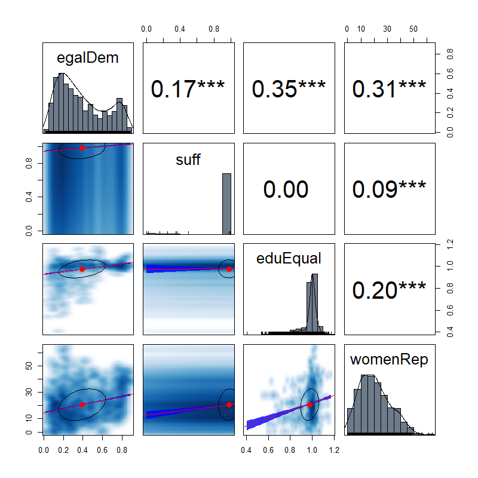
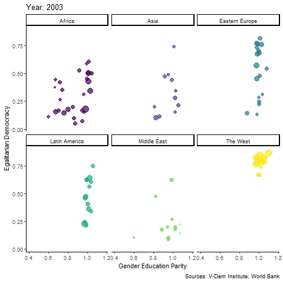

Women in Governance and Women’s Empowerment: Regional Patterns and Country-Level Deviations
Executive Summary
Problem: Norris (2006) argues that proportional electoral systems are the primary driver of women’s representation in governance, pointing to the Nordics, Netherlands, and Rwanda as exemplary cases. This framing privileges electoral system design over other structural factors. An anthropological perspective suggests that universal suffrage and equitable access to education may be equally or more influential – and that place-specific cultural and historical variables may disrupt the regional patterns that proportional representation theory predicts.
Approach: Combined V-Dem and World Bank data to examine four variables across six world regions from 2003 onward: egalitarian democracy index, share of population with suffrage, women’s representation in national governance, and gender parity in primary and secondary education. Correlation analysis quantified variable relationships across the full dataset; an animated visualization tracked regional dynamics year by year; and comparative median and IQR tables for selected affluent and notable countries tested whether regional patterns hold at the country level.
Implications: Women’s representation in governance correlates strongly with educational gender parity and egalitarian democracy at the regional level, but this relationship breaks down at the country level in ways that proportional representation theory does not predict. Affluent countries – including the US, Japan, and China – underperform on women’s empowerment relative to their wealth and democracy scores. Less affluent countries such as Mexico, Rwanda, Lithuania, and Czechia outperform expectations. Policy aimed at increasing women’s representation should prioritize universal suffrage and equitable educational access alongside electoral system reform – and account for place-specific variables that regional frameworks obscure.
Significance: The finding that regional patterns mask significant country-level variation has direct implications for how international development organizations and governance reform programs target interventions. A one-size-fits-all proportional representation prescription misses the structural and cultural factors that explain why some countries outperform and others underperform their regional peers.
Key Findings
- All four variables – egalitarian democracy, suffrage, women’s representation, and educational gender parity – show strong positive correlations across the full dataset
- Regional rankings are consistent across mean statistics but shift in median and IQR analyses, with Latin America ranking second for women’s representation but fourth for educational parity
- The West and Eastern Europe show relatively static trends over the 20-year period; Africa shows the greatest temporal variation, reflecting post-colonial political upheaval across 55 diverse countries
- Affluent countries (US, Japan, China) underperform on women’s empowerment relative to wealth; Mexico, Rwanda, Lithuania, and Czechia outperform expectations, undermining a simple wealth-or-PR explanation
- The Middle East presents a sharp dichotomy: low women’s representation despite high educational gender parity in some countries (e.g., Oman), suggesting cultural and legal barriers independent of educational access
Research Question
Does women’s representation in governance correlate with broader measures of women’s empowerment – educational gender parity, suffrage, and egalitarian democracy – and do these regional patterns hold at the country level, or do place-specific variables disrupt the relationship Norris’s proportional representation framework predicts?
Research Answers
Strong Positive Correlation Across All Variables
Pearson correlation analysis across the full dataset shows a significant positive correlation among all four variables: egalitarian democracy, suffrage, women’s representation in governance, and gender parity in education. The correlation plot displays coefficients above the diagonal (asterisk denotes p < 0.05), histograms on the diagonal, and loess-smoothed bivariate scatterplots below the diagonal with density ellipses highlighting the densest regions.
Figure 1. Correlation matrix for democracy and women’s empowerment variables, 2003 onward.

Regional Mean Values
| Region | Egalitarian Dem | Suffrage | Edu Parity | Women’s Rep |
|---|---|---|---|---|
| The West | 0.781 | 1.000 | 1.005 | 30.43 |
| Latin America | 0.431 | 1.000 | 1.012 | 24.49 |
| Eastern Europe | 0.438 | 1.000 | 0.997 | 20.43 |
| Africa | 0.278 | 0.988 | 0.923 | 19.81 |
| Asia | 0.310 | 0.991 | 0.969 | 15.82 |
| Middle East | 0.207 | 0.879 | 0.978 | 11.99 |
Regional Median Values
| Region | Egalitarian Dem | Suffrage | Edu Parity | Women’s Rep |
|---|---|---|---|---|
| The West | 0.791 | 1.000 | 1.003 | 32.16 |
| Latin America | 0.406 | 1.000 | 1.008 | 22.16 |
| Eastern Europe | 0.412 | 1.000 | 0.996 | 20.00 |
| Africa | 0.257 | 1.000 | 0.957 | 16.67 |
| Asia | 0.274 | 1.000 | 1.002 | 15.96 |
| Middle East | 0.180 | 1.000 | 0.994 | 10.46 |
Regional IQR Values
| Region | Egalitarian Dem | Edu Parity | Women’s Rep |
|---|---|---|---|
| Latin America | 0.358 | 0.038 | 17.14 |
| Middle East | 0.129 | 0.055 | 16.79 |
| The West | 0.074 | 0.035 | 16.59 |
| Africa | 0.215 | 0.167 | 15.74 |
| Asia | 0.242 | 0.065 | 14.61 |
| Eastern Europe | 0.346 | 0.021 | 9.90 |
Regional Dynamics: Africa Shows the Most Change Over Time
The animated visualization tracks educational gender parity (x-axis), egalitarian democracy (y-axis), and women’s representation (point size) by region from 2003 onward. The West and Eastern Europe show relatively stable trajectories – high educational parity and egalitarian democracy with moderate-to-high women’s representation, changing little year to year. Africa shows the greatest temporal variation, which is consistent with the region’s diversity: 55 countries spanning the bulk of global cultural and genetic variation, with significant post-colonial political upheaval shaping trajectories differently across countries and decades.
The Middle East presents a particular dichotomy: some countries show high educational gender parity but very low women’s representation, suggesting that access to education has not translated into political participation – likely due to legal and cultural barriers that operate independently of educational attainment.
Figure 2. Animated visualization of gender education parity, egalitarian democracy, and women’s representation by region, 2003 onward. Point size reflects women’s representation; color reflects region.

Interpretation: Regional trajectories are not uniform. The static picture from correlation analysis obscures substantial within-region variation over time, particularly in Africa and the Middle East. Temporal dynamics matter for understanding where change is happening and where structural barriers persist.
Country-Level Deviations Undermine Regional Frameworks
Regional mean statistics rank all six regions consistently across the four variables, with the West highest and the Middle East lowest. But median and IQR analyses reveal a more complicated picture that mean values smooth over.
In median analysis, Latin America ranks second for women’s representation but fourth for educational parity – a rank-order inversion that the mean obscures. Mexico is driving the Latin American median for women’s representation (37.1), far above Chile (15.8) and Brazil (9.5). Among the globally most affluent countries, the US, Japan, and China all underperform on women’s empowerment relative to their wealth and democracy scores. The UAE median for women’s representation (22.5) exceeds the US, Japan, and China – despite having more restricted suffrage rights. Saudi Arabia’s suffrage median of 0.000 reflects a legal prohibition on women’s voting that persisted through much of the analysis period, making it the starkest case of legal exclusion in the dataset.
Rwanda stands out as the most striking outlier in the entire comparative dataset: a women’s representation median of 61.25 – nearly 20 points above the next highest country (South Africa at 42.25) and more than double the Western regional median. Rwanda has legislated gender quotas mandating at least 30% women in all decision-making bodies, and women currently hold the majority of parliamentary seats globally. Rwanda, however, has a low egalitarian democracy score (0.205) and this example underscores how women’s representation can be structurally enforced independent of broader democratic development – a finding that complicates both Norris’s framework and simple wealth-based explanations.
IQR analysis shows that the relationship between educational gender parity and women’s representation is not consistent at the country level. Rwanda has educational gender parity similar to China but women’s representation nearly twelve times higher. Saudi Arabia has the second-highest IQR for women’s representation (19.868, after Mexico at 23.5) but an egalitarian democracy IQR of just 0.002 – the lowest in the table – indicating that women’s representation has been changing while the broader democratic environment has remained essentially static. Brazil has the highest egalitarian democracy IQR (0.138) but very low women’s representation (9.5).
Comparative Median Values for Selected Countries
| Country | Women’s Rep | Egalitarian Dem | Suffrage | Edu Parity |
|---|---|---|---|---|
| United States of America | 18.57 | 0.684 | 1.000 | 0.996 |
| Japan | 9.58 | 0.764 | 1.000 | 1.005 |
| China | 23.40 | 0.100 | 1.000 | 1.008 |
| Germany | 32.80 | 0.826 | 1.000 | 0.965 |
| United Kingdom | 22.54 | 0.743 | 1.000 | 1.013 |
| France | 26.17 | 0.781 | 1.000 | 1.001 |
| Mexico | 37.10 | 0.333 | 1.000 | 1.024 |
| Brazil | 9.45 | 0.610 | 1.000 | 1.020 |
| Chile | 15.83 | 0.653 | 1.000 | 0.988 |
| South Africa | 42.25 | 0.514 | 1.000 | 1.004 |
| Nigeria | 5.83 | 0.282 | 1.000 | 0.897 |
| Kenya | 18.86 | 0.319 | 1.000 | 0.952 |
| United Arab Emirates | 22.50 | 0.129 | 0.160 | 0.978 |
| Oman | 1.19 | 0.180 | 1.000 | 0.986 |
| Saudi Arabia | 19.87 | 0.108 | 0.000 | 0.964 |
| Rwanda | 61.25 | 0.205 | 1.000 | 1.015 |
| Lithuania | 22.34 | 0.744 | 1.000 | 0.978 |
| Czechia | 21.00 | 0.788 | 1.000 | 1.006 |
| Netherlands | 38.67 | 0.800 | 1.000 | 0.991 |
Comparative IQR Values for Selected Countries
| Country | Women’s Rep | Egalitarian Dem | Edu Parity |
|---|---|---|---|
| United States of America | 6.704 | 0.100 | 0.009 |
| Japan | 1.045 | 0.021 | 0.001 |
| China | 3.608 | 0.013 | 0.016 |
| Germany | 3.447 | 0.018 | 0.017 |
| United Kingdom | 12.456 | 0.019 | 0.009 |
| France | 19.281 | 0.026 | 0.005 |
| Mexico | 23.500 | 0.033 | 0.019 |
| Brazil | 6.335 | 0.138 | 0.024 |
| Chile | 8.414 | 0.048 | 0.004 |
| South Africa | 9.527 | 0.020 | 0.009 |
| Nigeria | 2.058 | 0.056 | 0.097 |
| Kenya | 11.955 | 0.022 | 0.006 |
| United Arab Emirates | 25.625 | 0.009 | 0.041 |
| Oman | 2.326 | 0.007 | 0.019 |
| Saudi Arabia | 19.868 | 0.002 | 0.020 |
| Rwanda | 5.000 | 0.010 | 0.019 |
| Lithuania | 3.456 | 0.043 | 0.021 |
| Czechia | 5.375 | 0.043 | 0.002 |
| Netherlands | 3.167 | 0.020 | 0.026 |
Interpretation: Country-level data consistently disrupts the regional framework. Proportional representation alone does not explain why Mexico, Rwanda, Lithuania, and Czechia outperform their regional peers, or why the US, Japan, and China underperform. Place-specific variables – legal frameworks, cultural values, post-colonial history – are doing explanatory work that regional electoral system theory cannot account for.
Next Steps
The country-level deviations from regional patterns suggest that a single explanatory framework is insufficient. A random forest analysis across the full set of V-Dem women’s empowerment variables would identify which factors carry the most predictive weight globally; subsequent regression tree analysis could spotlight the most salient variables within specific regional or cultural contexts. This approach would allow place-specific variables to surface rather than being averaged away in regional summaries.
The current analysis is limited to 2003 onward by World Bank data availability. Extending the temporal range with alternative data sources would allow longer-term trajectories – particularly pre- and post-suffrage transitions – to be examined.
Study Design
Data Source: Two datasets merged for analysis. V-Dem (Varieties of Democracy) dataset accessed via the vdemdata R package: egalitarian democracy index and share of population with suffrage, 2003 onward, six world regions. World Bank dataset accessed via wbstats: women’s representation in national governance (SG.GEN.PARL.ZS) and gender parity in primary and secondary education (SE.ENR.PRSC.FM.ZS), most recent 50 years. Merge performed on ISO3 country codes, with V-Dem country IDs converted to World Bank codes via countrycode. Missing data: 6,144 cases for women’s representation; 5,257 cases for educational parity.
Data Handling: V-Dem region variable recoded from six-level numeric to named categories. Datasets merged by ISO3 code and year; V-Dem country name retained. Relocations applied for variable ordering. Year converted to integer for animation. Summary statistics computed at regional and country levels using mean, median, and IQR. Country-level comparisons focused on three globally affluent countries, the top three affluent countries per OECD region, and four countries highlighted by Norris as notable cases.
Analytical Approach:
- Downloaded and merged V-Dem and World Bank data on ISO3 country code and year
- Computed Pearson correlation matrix with
pairs.panels()across all four variables for the full dataset - Animated year-by-year regional dynamics using
gganimateandgifski– educational gender parity on x-axis, egalitarian democracy on y-axis, women’s representation as point size, region as color - Computed regional summary statistics (mean, median, IQR) and examined rank-order consistency across statistics
- Computed country-level median and IQR for selected affluent and notable countries; compared against regional expectations and Norris’s framework
Data & Code
Repository: github.com/kchoover14/women-governance-empowerment
Available:
- R analysis script
- Rendered HTML output with animated figure
- CSV exports of regional and country summary tables
Tools & Technologies
- Languages: R
- Tools: RStudio, GitHub
- Packages:
vdemdata,wbstats,countrycode,dplyr,ggplot2,gganimate,gifski,psych,glue
Expertise
Domain Expertise: women’s empowerment | governance and democracy | educational equity | cross-national longitudinal analysis | V-Dem data | World Bank data | animated data visualization
Transferable Expertise: This project demonstrates the ability to critically evaluate dominant theoretical frameworks using empirical cross-national data – identifying where regional-level patterns break down at finer scales and surfacing the place-specific variables that aggregate analyses obscure. The analytical approach is directly applicable to any domain where policy recommendations risk being over-generalized from regional or national averages.